長期トレンド
JKMとJEPXシステムプライスの推移グラフ
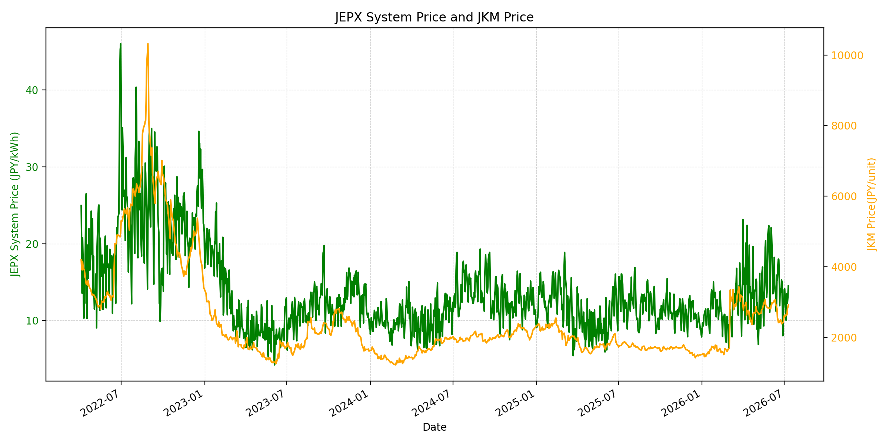
WTIの推移グラフ
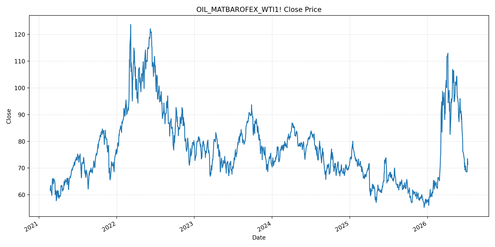
JEPXエリアプライスグラフ（直近一年分）
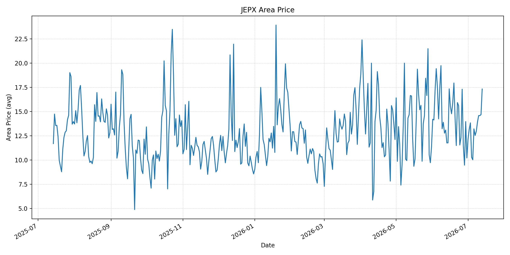
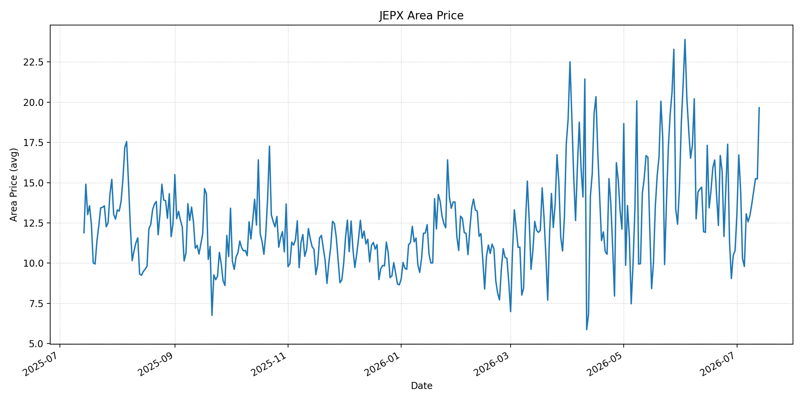
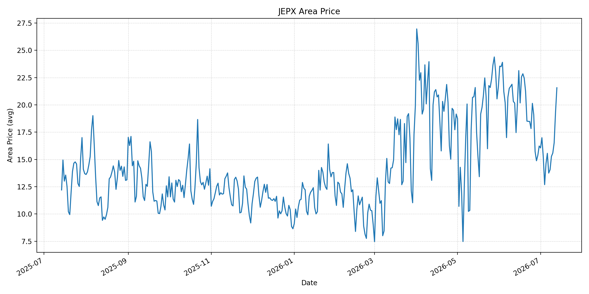
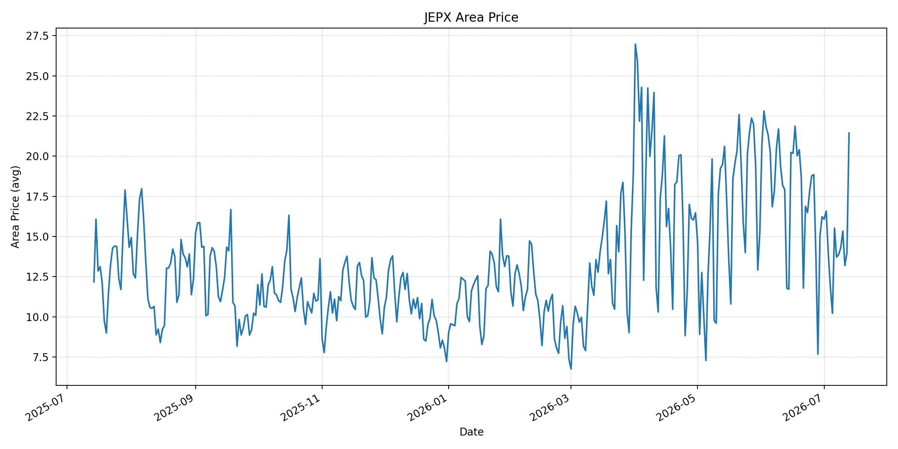
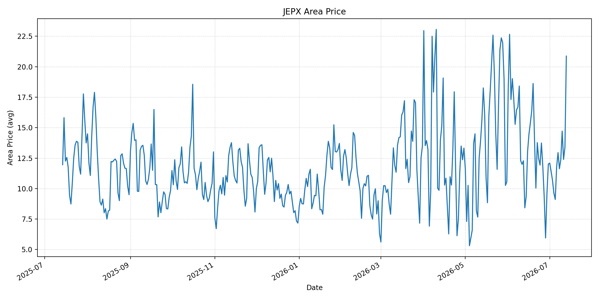
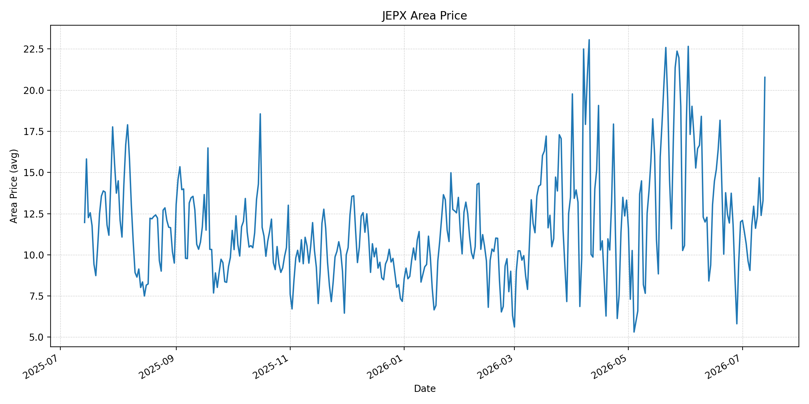
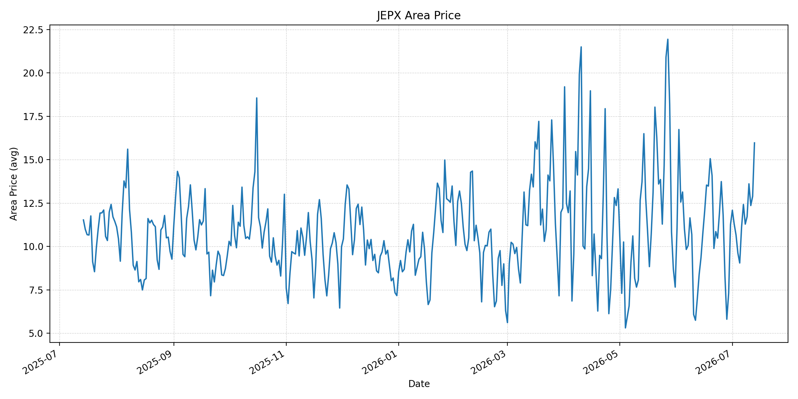
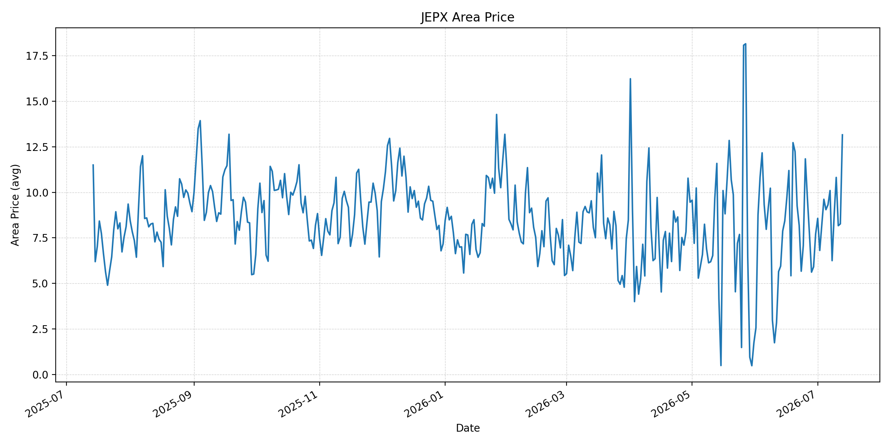
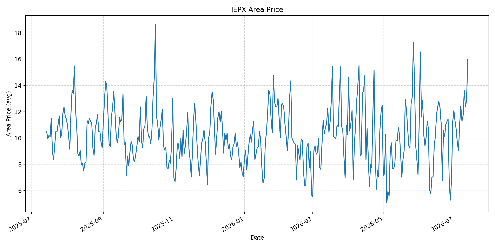
短期トレンド
JKMとJEPXシステムプライスの推移グラフ
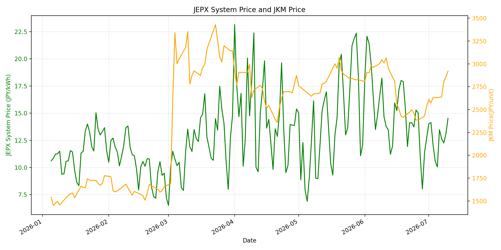
WTIの推移グラフ
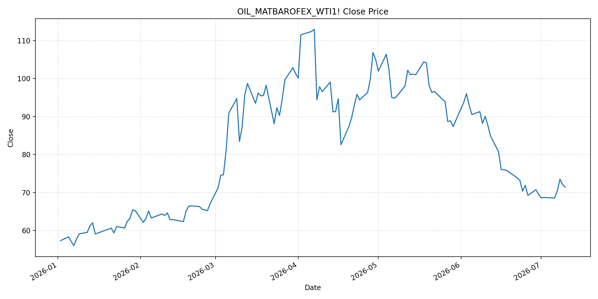
JEPXシステムプライス
JEPXは受渡日ベースの最新非空値で評価しています。最新値は 2026-07-13 分です。先週終値は 2026-07-06 時点の直近値、先月終値は 2026-06-30 時点の直近値で評価しています。
| エリア | 当日価格 | 前日価格 | 前日比（％） | 先週終値 | 先週比（％） | 先月終値 | 先月比（％） | 過去最高値 | 最高値比（％） |
|---|---|---|---|---|---|---|---|---|---|
| システム | 19.11 | 15.00 | 27.40 | 13.48 | 41.77 | 12.73 | 50.12 | 64.06 | -70.17 |
| 北海道 | 17.32 | 14.68 | 17.98 | 13.21 | 31.11 | 10.21 | 69.64 | 73.92 | -76.57 |
| 東北 | 19.66 | 15.23 | 29.09 | 13.06 | 50.54 | 10.78 | 82.37 | 84.92 | -76.85 |
| 東京 | 21.57 | 19.29 | 11.82 | 15.56 | 38.62 | 16.23 | 32.90 | 86.13 | -74.96 |
| 中部 | 21.44 | 13.99 | 53.25 | 15.52 | 38.14 | 16.23 | 32.10 | 52.06 | -58.82 |
| 北陸 | 20.87 | 13.40 | 55.75 | 11.78 | 77.16 | 12.01 | 73.77 | 46.48 | -55.10 |
| 関西 | 20.78 | 13.29 | 56.36 | 11.78 | 76.40 | 12.00 | 73.17 | 46.48 | -55.30 |
| 中国 | 15.97 | 12.89 | 23.89 | 11.11 | 43.74 | 11.26 | 41.83 | 46.48 | -65.64 |
| 四国 | 13.16 | 8.27 | 59.13 | 9.32 | 41.20 | 7.72 | 70.47 | 46.48 | -71.69 |
| 九州 | 15.97 | 12.89 | 23.89 | 11.02 | 44.92 | 11.24 | 42.08 | 40.54 | -60.61 |
LNG先物価格
最新値は 2026-07-10 の LNG(close) です。先週終値は 2026-07-03 時点の直近値、先月終値は 2026-06-30 時点の直近値で評価しています。
| 当日価格 | 前日価格 | 前日比（％） | 先週終値 | 先週比（％） | 先月終値 | 先月比（％） | 過去最高値 | 最高値比（％） |
|---|---|---|---|---|---|---|---|---|
| 2921.00 | 2857.00 | 2.24 | 2630.00 | 11.06 | 2541.00 | 14.95 | 10319.00 | -71.69 |
石油先物価格
最新値は 2026-07-10 の OIL(close) です。先週終値は 2026-07-02 時点の直近値、先月終値は 2026-06-30 時点の直近値で評価しています。
| 当日価格 | 前日価格 | 前日比（％） | 先週終値 | 先週比（％） | 先月終値 | 先月比（％） | 過去最高値 | 最高値比（％） |
|---|---|---|---|---|---|---|---|---|
| 71.41 | 72.08 | -0.93 | 68.69 | 3.96 | 69.50 | 2.75 | 123.70 | -42.27 |
ニュース
イラン情勢に関するニュース
- 2026年7月13日、APは、米国がホルムズ海峡を航行する商船へのイラン攻撃を受け、イランに対して複数波の空爆を実施したと報じました。イランはバーレーン、クウェート、カタール、ヨルダン、オマーンの米軍関連施設を標的に反撃しており、外交仲介は継続しているものの不安定です。 参照: AP, 2026-07-13
- Guardianは、米中央軍がイランの海上攻撃能力を低下させる目的で新たな攻撃を行い、イラン側は「外交は無意味になった」と主張したと報じました。イランは海峡閉鎖を宣言していますが、米国は商業通航が維持されているとしています。 参照: Guardian, 2026-07-13
ホルムズ海峡経由の石油・LNGに関するニュース
- APは、イランが海峡閉鎖を主張する一方、米国は海峡が開いているとし、過去1週間で140隻超が同海域を通過したと報じました。攻撃を受けた船舶はオマーン沖のキプロス船籍コンテナ船で、乗員1名が行方不明です。 参照: AP, 2026-07-13
- WSJは、米イランの新たな攻撃応酬で、WTI先物が3.2％上昇して73.70ドル、Brentが3.1％上昇して78.38ドルになったと報じました。ホルムズ海峡は世界の石油供給の約5分の1が通る要衝で、攻撃は暫定和平を損なうリスクがあります。 参照: WSJ, 2026-07-13
ホルムズ海峡経由でない石油・LNGに関するニュース
- 過去24時間で、非ホルムズの新規増産、代替パイプライン、または非ホルムズLNG供給を直接変更する強い新規記事は確認できませんでした。市場材料はホルムズ通航リスクと米イラン攻撃応酬に集中しています。 参照: MarketWatch, 2026-07-13
- MarketWatchは、WTIが4％超上昇して74ドル近辺、Brentが78ドル超となった一方、投資家は通航混乱が管理可能な範囲にとどまるとの見方も維持していると報じました。非ホルムズ供給が即座に逼迫したというより、インフレ・燃料費リスクの再評価が中心です。 参照: MarketWatch, 2026-07-13
日本国内のイラン戦争に関係するニュース
- 過去24時間で、JEPX制度、国内電力需給ルール、または日本政府の対イラン戦争関連対策を直接変更する主要な新規公表は確認できませんでした。
- 関連する国内材料として、経済産業省は2026年5月20日、2026年度夏季は全エリアで安定供給に最低限必要な予備率3％を確保できるため節電要請を実施しないと発表しています。一方で、国際情勢の変化、異常気象、火力発電所の集中はリスクとして明記されています。 参照: 経済産業省, 2026-05-20
インサイト
ニュース事項による日本の電力市場への影響（短期：数日〜1週間）
- JEPXシステムプライスは 19.11 円/kWhで前日比 27.40%、先週比 41.77% と急上昇しました。東京 21.57 円/kWh、中部 21.44 円/kWh、北陸 20.87 円/kWhと広域で高く、夏季需給と燃料リスクが同時に反映されています。
- OILは 71.41 で前日比 -0.93% ですが、先週比は 3.96% です。週明けのWTI・Brent上昇報道を踏まえると、数日〜1週間ではデータ上の油価下落よりも地政学プレミアムの再上昇を警戒すべき局面です。
- LNGは 2921.00 で前日比 2.24%、先週比 11.06% と上昇が続いています。ホルムズ通航が完全停止していなくても、攻撃応酬と保険・配船リスクが日本のLNG調達心理を押し上げ、JEPXの下支え要因になります。
ニュース事項による日本の電力市場への影響（長期：1ヶ月〜半年）
- 過去1週間で140隻超が通航したとのAP報道は、完全閉鎖シナリオを抑える材料です。ただし、イランの閉鎖宣言と米軍の追加攻撃が続く限り、物流・保険コストは残り、LNGは過去最高値比 -71.69% の低位でも中期的な上振れ余地があります。
- JEPXシステム価格は先月比 50.12%、北海道は 69.64%、東北は 82.37% 上昇しています。燃料価格だけでなく、夏季需要、発電所集中リスク、地域間連系の制約が重なると、1ヶ月〜半年でも地域価格のばらつきが残ります。
- 非ホルムズの追加供給材料が乏しいため、短期の沈静化は外交と通航実績に依存します。OILは過去最高値比 -42.27% と歴史的高値からは低いものの、攻撃が商船・湾岸施設へ広がる場合は、燃料本体価格より調達プレミアムが長引く可能性があります。